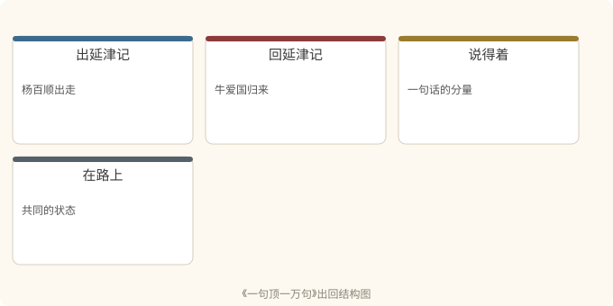

一句顶一万句
一、基本信息
| 作者 | 刘震云 |
|---|---|
| 成书/出版 | 2009年出版（中国作家网 C017：上下部刊于《人民文学》第2、3期，同年合名出版）；2011年获第八届茅盾文学奖（C017/C012） 一次出走，或一万次精神自赎——《一句顶一万句》（中国作家网）（官方文学机构） |
| 国别/地区 | 中国 |
| 时代 | 现当代 · 当代 |
| 体裁 | 长篇小说 |
| 语言 | 汉语（白话·中原方言） |

《一句顶一万句》出回结构图（主题·结构图）
二、创作背景
中国作家网（C017）：'2009年第2期与第3期，《出延津记》与《回延津记》以上下部登载，同年，小说合名为《一句顶一万句》出版。'
主题评论（C017）：'人与人的有效联结来自是否说得着'。
三、内容脉络
上部《出延津记》：杨百顺——'跟丢了师傅、砸了饭碗、跑了老婆、丢了孩子的被命运一再伤害的人'——改名吴摩西、罗长礼，走出延津（C017）。
下部《回延津记》：牛爱国（杨百顺养女的儿子）'宿命般向着延津归来'（C017）。
'出'与'回'主体不同，但他们共享一种状态：在路上（C017）。
四、主要人物表
| 人物 | 身份 | 说明 |
|---|---|---|
| 杨百顺 | 出延津者 | '仿佛三个人的三段人生拼贴在一个不安且持续不满的人那里'（C017） |
| 牛爱国 | 回延津者 | 养女的儿子（C017） |
五、主题与艺术特点
- 中国式孤独：找'说得着'的人（C017）。
- 说话的哲学：'整部小说，几乎就是由一句引出了一万句'（C017）。
- 在路上：'他们又都找到了什么'的开放式回答（C017）。
六、影响与评论
- 中国作家网：获第八届茅盾文学奖（C017：'两年后，刘震云获第八届茅盾文学奖'；C012 官方名单）。
一次出走，或一万次精神自赎——《一句顶一万句》（中国作家网）（官方文学机构） - 中国作家网：问世后即被冠以作者'扛鼎之作'之称（C017）。
一次出走，或一万次精神自赎——《一句顶一万句》（中国作家网）（官方文学机构）
七、阅读建议
难点
- '绕'的说话式叙事——读出节奏。
- 中原地名与人名谱系。
- 《一句顶一万句》（长江文艺出版社，C012 官方名单口径）。
对照《活着》：两种底层叙事。
八、待核实
- 杨百顺原型（作者外祖母的叔叔说）待核。
- 人物改名细节（老汪等其他人物）核对。
- 小说出版当年获人民文学奖说待核。
本页主要来源
刘震云的其他收录作品：一句顶一万句